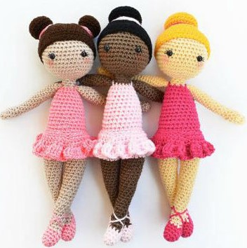

Somos La Maga, un emprendimiento dedicado a crear piezas únicas con hilos, lana, dedicación y mucho amor.
Te invitamos a que recorras nuestra web, nuestra historia y te enamores de todos los productos que tenemos disponibles.

Acá una de nuestras creaciones favoritas, creado de forma exclusiva para una pequeña amante del ballet.